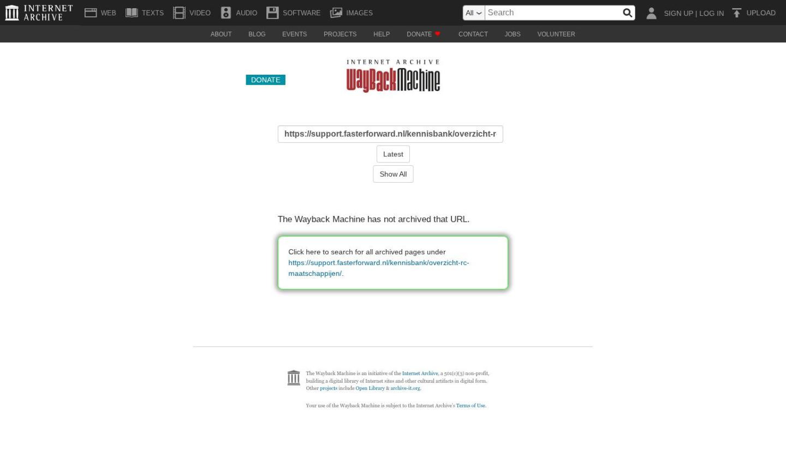

Digitale formulieren versturen

Tekstinhoud
Digitale formulieren versturen | Support
---
Digitale formulieren versturen
Beschikbaar in: eBlinqx Compleet, Verzekering Provinciaal, Hypotheek Totaal
Als je gegevens wilt opvragen bij je klanten, doe je dit eenvoudig met digitale vragenlijsten. De gegevens die de klant invult, komen via een e-mail in het juiste klantdossier. Zo geeft jouw klant makkelijk zijn gegevens door en hoeft hij geen PDF of geprint formulier in te vullen.
Actiefbeheerscan
Beschikbare formulieren
Klant uitnodigen
Digital Only
Beschikbare formulieren
Klant uitnodigen
Digitaal op Maat
Beschikbare formulieren
Klant uitnodigen
Let op: Om deze functionaliteiten te gebruiken, moet je eerst een contract afsluiten met Actiefbeheerscan, Digitaal op Maat of Digital Only. Daarna kan een medewerker van Blinqx de formulieren implementeren in eBlinqx.
Actiefbeheerscan
Actiefbeheerscan is ontwikkeld door De Nationale Hypotheekbond. Zij leveren standaard de volgende formulieren. Daarnaast is het ook mogelijk om formulieren op maat te laten maken.
Beschikbare formulieren
Jaarlijkse nazorgscan
Autoverzekeringscan
Hypotheekscan
Aflossingsvrije hypotheekscan
Overlijdensrisicoscan
Bedrijfsverzekeringsscan
Klanttevredenheidsonderzoek
Pensioenscan
Schadeverzekeringsscan
Uitvaartscan
WOZ bezwaar
Klant uitnodigen
Stuur een e-mail naar support-eblinqx@blinqx.tech om de link van de vragenlijst te laten inrichten in je workflow. Vermeld hierbij in welke workflow en op welk moment je een bepaalde vragenlijst naar de klant wilt versturen. Volg de volgende stappen zodra dit is ingericht.
Verstuur uitnodiging
Wil je een klant uitnodigen om de vragenlijst in te vullen? Kopieer dan de openbare link van de vragenlijst in Actiefbeheerscan en plak deze link in een e-mail.
Het is ook mogelijk om de link van de vragenlijst aan een workflow toe te voegen. Je kan zo een moment kiezen waarop jij bij iedere klant deze vragenlijst wilt versturen.
Ingevulde vragenlijst in klantdossier
De afzender van het e-mailadres is van de klant, waardoor de e-mail automatisch in het juiste klantdossier terecht komt.
Digital Only
De online formulieren van Digital Only maken het mogelijk om gegevens uit eBlinqx op te halen en deze te tonen in een vragenlijst. Digital Only levert de volgende standaard formulieren, maar het is ook mogelijk om formulieren op maat te laten ontwikkelen.
Beschikbare formulieren
Aanvraagformulier verzekeringen
Goederentransport
Herbouwwaardemeter 2022
Intermediairswijziging hypotheek
Intermediairswijziging levensverzekering
Intermediairswijziging schadeverzekering
Klantprofiel (Adviesbox)
Klantprofiel (DocDigi)
Klantprofiel (Figlo)
Machtigingsformulier
Naverrekeningsformulier zakelijk
Opzegbrief verzekeringen
Periodieke check autoverzekering
Periodieke check hypotheken
Periodieke check woonverzekering
Schadeformulier aansprakelijkheidsverzekering
Schadeformulier algemeen
(Formulier heeft een beslisboom, zodat voor de soort verzekering alleen die specifieke vragen worden getoond)
Schadeformulier glas
Schadeformulier inboedel
Schadeformulier inboedel/opstal combi
Schadeformulier opstal
Schadeformulier reis/annulering
SEPA machtiging automatische incasso (tussenpersoon incasso)
Hier kan je eventueel wat voorbeelden zien. Voor de inrichting en afstemming van jou wensen, neem je contact op met Digital Only.
Klant uitnodigen
Verstuur uitnodiging
Wanneer je een contract hebt met Digital Only en alles is ingericht dan kan je de klant uitnodigen. Als je een klant wilt uitnodigen, kan je de link van de vragenlijst handmatig of via een tag toevoegen aan een e-mail via 'Correspondentieteksten beheer'.
Het is hierbij ook mogelijk om een normaal PDF-bestand mee te sturen, voor de klanten die minder digitaal zijn. Digital Only legt aan je uit hoe dit werkt tijdens de inrichting.
Deze e-mail kan ook worden toegevoegd aan een workflow, zodat je de e-mail altijd op een bepaald moment naar een klant verstuurt. Denk hierbij aan een periodieke nazorgcheck om aan de klant te vragen of zijn gegevens nog actueel zijn. Voor inrichting van jouw workflows neem je contact op met support-eblinqx@blinqx.tech.
Klant vult in of controleert
Wil je dat jouw klanten alleen hun gegevens moeten controleren, i.p.v. alles in te vullen? Dat kan ook.
De relevante gegevens uit het klantdossier in eBlinqx worden dan automatisch in het formulier geplaatst. De klant hoeft alleen zijn gegevens te controleren en aan te vullen.
Opdracht tot dienstverlening laten ondertekenen
Het is ook mogelijk om een Opdracht tot Dienstverlening (OTD) naar de klant te versturen om deze te laten ondertekenen. De OTD is in principe altijd maatwerk omdat ieder advieskantoor eigen teksten heeft en een eigen opbouw van bedragen wilt laten zien.
Ingevulde vragenlijst in klantdossier
Dankzij de koppeling komt de e-mail automatisch in het juiste klantdossier.
Digitaal op Maat
Beschikbare formulieren
De volgende formulieren van Digitaal op Maat zijn verbonden met eBlinqx. Neem contact op met Digitaal op maat voor informatie over de mogelijkheden.
Schadeformulieren glas/inboedel/woonhuis/voertuig/reis etc.
SEPA Machtiging
Opzegformulier
UBO
Onderhoudsformulier AOV
Aanvraagformulieren
Inventarisatie voor adviesgesprek
OTD Uitvaartverzekering
Jaarlijkse check schadeverzekeringen
Check persoonlijke situatie
Jaarlijkse check hypotheek
Klant uitnodigen
Stuur een e-mail naar support-eblinqx@blinqx.tech om de link van de vragenlijst te laten inrichten in je workflow. Vermeld hierbij in welke workflow en op welk moment je een bepaalde vragenlijst naar de klant wilt versturen.
Zodra dit is ingericht, kun je bijvoorbeeld onderstaande e-mail versturen naar jouw klanten.
Laatste update: 11 april 2025
Was deze informatie nuttig?
Ja Nee